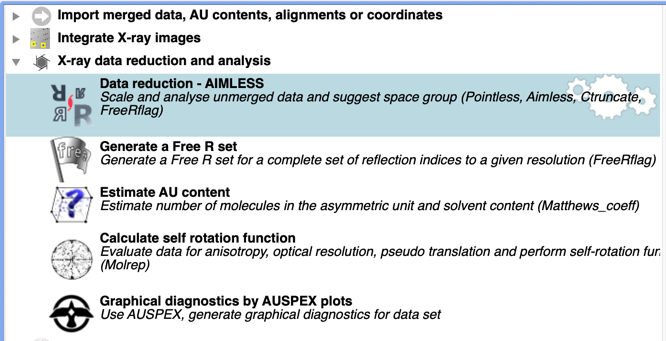

CCP4i2 Tutorial: gamma (PDB:1GYU)
Adapter proteins of the AP2 complex select membrane protein cargo for capture into vesicles. The Gamma adapter binds to peptide motifs on, amongst others, the EGF receptor, resulting in receptor internalization and recycling. Recognition of the cytoplasmic tail of EGFR is mediated by the ear domain, which was crystallized and into which Xenon atoms have been introduced under pressure prior to flash cooling. A SAD dataset was collected on a home source from these crystals.
The structure can be solved quickly by either molecular replacement or experimental phasing and is a good introduction to CCP4i2. It can be solved by Molecular Replacement with the native data using 2ymt.pdb (the human homologue, 45% identical) as a search model, or by experimental SAD phasing from the Xe data (3 Xe sites, + maybe 3 possible sulphurs), or using SIRAS with both the native and Xe data. (Do not get the false impression that all structure solutions are this easy!).
Getting started
- Open CCP4I2.
A Tips window appears - close and proceed.
- Create New Project.
Open Projects directory from top menu bar. Give the project a name, e.g. Gamma, then click "Create project".

- Import sequence Task.
Double click on the Task:

Click on the brown file browser button and a file browser will pop up. Select "demo-data" in the left-hand panel, select gamma, then gamma.pir. Run the job to load the Gamma sequence.

- Data Reduction - Aimless Task.
Double click on this Task.

This will open up the Data reduction - Aimless Task. Click on the brown file browser button as for the sequence. Select "demo-data" in the left-hand panel, select gamma, and then gamma_native.mtz which contains the unmerged native data for the protein without Xe. Note: items highlighted in red are essential before the Task will run. A Crystal name and dataset name must be provided. (Suggested names: Gamma and native). Run the Task

The Results summary will suggest to what resolution the data are useful (based on CC1/2 > 0.3). For these data the full resolution range can be used to 1.81Å. Look at the merging statistics. For most projects it is necessary to run this task twice - first to analyse all the observations, then after checking the report provided, to cut the list to a sensible resolution range and exclude any bad sets of images..
ALWAYS study the data merging output VERY carefully.
- Is the Wilson plot linear?
- Is there evidence of twinning?
- Is there a non-crystallographic translation vector?
- Estimate AU content Task. (X-ray data reduction and analysis Tasks).
The Matthews coefficient is used to estimate how many copies of the Gamma molecule could fit into the asymmetric unit of the orthorhombic unit cell. For this structure only one molecule can be accommodated.
- Define AU Contents Task.
Use the sequence loaded above and define 1 copy in the AU.
In some more complicated cases you may have to modify the number of copies after solving the structure.
Molecular Replacement - Preparation
Molecular replacement fits a known model with a related sequence into the new structure's unit cell. The first challenge is to find a suitable model. There are various tools to search sequence data bases and prepare models, but for this tutorial we will use the pre-selected model, 2ymt, which is then trimmed for Phaser using Sculptor to more closely match the new sequence.
- Import Coordinate set Task.
Import the coordinates for a homology model, 2ymt, from the EBI. Clicking on the brown browser button will open the panel below and allow 2ymt to be downloaded from the EBI.

- Import Sequence(s) Task
Import the sequence of 2ymt, by selecting this in the Atomic Model option.

Molecular Replacement using the MOLREP pipeline
- Molecular Replacement and Refinement - MOLREP Task.
Input the merged native data and Rfree set imported above, the homology model and the AU contents. MOLREP can extract the sequence from the AU contents and if this is given performs its own sequence alignment and model editing. If not, MOLREP used the full homology model.

The task will run MR, followed by 5 cycles of refinement with REFMAC. For Gamma, the task should produce a solution with an R factor of ~51%.
- Refinement REFMAC Task. After successful MR, it is useful to run several more cycles of refinement before embarking on Autobuilding. (The MOLREP pipeline has already included 5 cycles of REFMAC). Input the MR model and run 25 cycles. For a correct MR solution, the R factor should drop significantly - in this case it reduces to about 37% - a very good starting point for correcting and rebuilding the model.
- Autobuild Protein - ModelCraft Task. This can be run as a follow-on Task from the bottom of the REFMAC report, or from the Task Menu. Input the native data from, the REFMAC refined model and the AU contents.
- Conclusion. You should now have a rather complete model which you can
inspect and correct with COOT then refine a little more with REFMAC
Molecular Replacement using Phaser
This is a powerful molecular replacement program which has several extra tools. Phaser can run with the complete homology model as search model, but this is definitely not a good idea as the strict Phaser packing checks often reject models with undesirable untrimmed loops. Hence it is better to first trim the search model to retain those features in common with the real sequence using the Sculptor Task, which requires aligned target and model sequences.
- Import Coordinate set Task. As for MOLREP, Import the coordinates for a homology model, 2ymt, from the EBI.
- Import Sequence(s) Task.
Import the sequence of 2ymt, by selecting this in the Atomic Model option.

- Align Sequences Task. (Bioinformatics section).
Load first the sequence of Gamma, then the sequence generated from 2ymt. Use the + button to add these. The sequences will be aligned using Clustalw.

- Truncate search model - Sculptor. Bioinformatics section. Input the 2ymt model coordinate and the aligned sequences. Sculptor will output a suitably trimmed search model.
- Basic Molecular Replacement - Phaser.
Select the native data and the search model output by Sculptor. Use the Provided by sequence option to load the defined AU contents. Set the sequence identity to known 0.45 for Gamma and 2ymt.
As well as loading the AU contents you need to set the number of Copies to the expected value.

- Refinement REFMAC Task. Input the model from Phaser and run 25 cycles. For a correct MR solution, the R factor should drop significantly - in this case it reduces to about 37% - a very good starting point for correcting and rebuilding the model.
- Autobuild Protein - ModelCraft Task. This can be run as a follow-on Task from the bottom of the REFMAC report, or from the Task Menu. Input the native data from, the REFMAC refined model and the AU contents.
- Conclusion. ModelCraft should output a rather complete model which you can refine a little more with REFMAC or just inspect and correct with COOT.
- Match model to reference data Task. For simplicity in later analysis, make sure solutions from REFMAC and Phaser are on the same origin, and use the same symmetry operator. (This task is under both Molecular Replacement or Coordinate Utilities)
Experimental Phasing - SAD
- Data Reduction and Aimless Task. Merge the Xenon derivative data from the gamma_Xe_mosflm.mtz file which contains the unmerged intensities. No resolution cutoff is needed - the data are good to 1.78Å.
You do not need to run (2), (3) or (4) if already done under Molecular Replacement.
- Import Sequence Task. Load the sequence for Gamma from the gamma.pir file.
- Estimate AU content Task. (X-ray data reduction and analysis Tasks). The Matthews coefficient is used to estimate how many copies of the Gamma molecule could fit into the asymmetric unit of the orthorhombic unit cell. For this structure only one molecule can be accommodated.
- Define AU Contents Task. Input the sequence from (2) and define 1 copy in the AU.
- Automatic Structure Building - CRANK2 Phasing Building Task SAD option.
This runs the Leiden Crank2 pipeline. Input the Xenon derivative Merged data and the AU contents. Define the anomalous scatterer as Xe, and insert a guess at the number expected - 3. CRANK2 will estimate the anomalous scattering components at this wavelength. The pipeline runs a series of subtasks (see below) and should output an essentially complete model with an R factor of ~24%.

- Refinement REFMAC Task.
The CRANK2 pipeline has refined this model against the Xenon derivative data. The native data are of better quality so it is sensible to carry out more cycles of refinement using these data.
- Conclusion. You can now inspect the resulting maps in COOT.
Experimental Phasing - SIRAS
This task will use the Xe derivative observed data and the native data, and the AU contents information, already imported.
- Automatic Structure Building - CRANK2 Phasing Building Task -SIRAS. This runs the Leiden Crank2 pipeline. Input all the files as for SAD above but now add the merged native data as Crystal 2. The pipeline should finally output an essentially complete model with an R factor of ~25%. The refinement is done against the native data.
- Conclusion. You can now either run more cycles of REFMAC, or more usefully just inspect the resulting maps in COOT.
The data for 1gyu were kindly donated by Phil Evans.